정보통신기사(구) (2015-10-04 기출문제)
1과목: 디지털 전자회로
1. 다음 중 정류회로에서 다이오드를 병렬로 여러 개 접속시킬 경우에 나타나는 특성으로 옳은 것은?
- 과전압으로부터 보호할 수 있다.
- 정류회로의 전류용량이 커진다.
- 정류기의 역방향 전류가 감소한다.
- 부하출력에서 맥동률을 감소시킬 수 있다.
(정답률: 63%)

2. 다음 정전압 회로에서 전압 안정도를 0.⑤로 하기 위해서 RS의 값은? (단, rd=10[Ω])
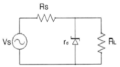
- 190[Ω]
- 260[Ω]
- 290[Ω]
- 330[Ω]
(정답률: 62%)
3. 입력신호의 전주기에 대하여 선형영역에서 동작하는 증폭기는?
- A급 증폭기
- B급 증폭기
- C급 증폭기
- D급 증폭기
(정답률: 74%)
4. 다음 증폭기 회로의 특성에 대한 설명으로 틀린 것은? (문제 오류로 실제 시험에서는 2, 3번이 정답처리 되었습니다. 여기서는 2번을 누르면 정답 처리 됩니다.)
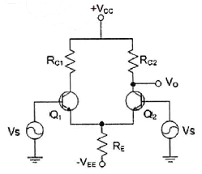
- 동상신호 제거비(CMRR)를 높게 하기 위해 hfe가 높은 트랜지스터를 사용한다.
- 동상신호 제거비(CMRR)를 높게 하기 위해 RE 값을 감소시킨다.
- 동상이득을 높게 하기 위해 RC1과 RC2 값을 감소시킨다.
- 차동이득을 높게 하기 위해 RE 값을 감소시킨다.
(정답률: 72%)
5. 다음 증폭기 회로에서 βDC=75인 경우 컬렉터 전압 VC는 약 얼마인가? (단, VBE=0.7[V]이다.)
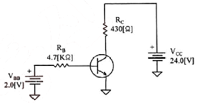
- 15.1[V]
- 17.1[V]
- 18.1[V]
- 20.1[V]
(정답률: 49%)
6. 전류 궤환 증폭기의 출력 임피던스는 궤환이 없을 경우에 비해 어떻게 변화하는가?
- 변화가 없다.
- 0이 된다.
- 감소한다.
- 증가한다.
(정답률: 61%)
7. 발진회로에서 발진을 지속하기 위해 필요한 과정은?
- 출력신호의 일부분을 부궤환시킨다.
- 출력신호의 일부분을 정궤환시킨다.
- 외부로부터 지속적으로 입력신호를 제공한다.
- L과 C성분을 제거한다.
(정답률: 79%)
8. 그림과 같은 발진회로에서 높은 주파수의 동작에 적절한 발진회로 구현을 위한 리액턴스 조건은 무엇인가?
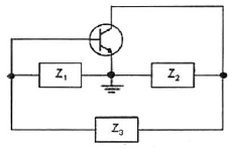
- Z1 = 용량성, Z2 = 용량성, Z3 = 용량성
- Z1 = 유도성, Z2 = 유도성, Z3 = 유도성
- Z1 = 유도성, Z2 = 용량성, Z3 = 용량성
- Z1 = 용량성, Z2 = 용량성, Z3 = 유도성
(정답률: 83%)
9. 변조도가 ‘1’이라는 의미는 무엇인가?
- 1[%] 변조
- 무변조
- 과변조
- 100[%] 변조
(정답률: 83%)
10. 디지털 신호의 정보 내용에 따라 반송파의 위상을 변화시키는 변조 방식으로 2원 디지털 신호를 2개씩 묶어 전송하는 QPSK 변조방식의 반송파 위상차는?
- 45[°]
- 90[°]
- 180[°]
- 270[°]
(정답률: 68%)
11. 병렬 클리핑 회로에서 클리핑 특성을 좋게 하기 위하여 사용되는 저항 R의 조건으로 옳은 것은? (단, Rd는 다이오드의 순방향 저항이다.)
- R=Rd
- R=1/Rd
- R
- R>Rd
(정답률: 64%)
12. 다음 그림과 같은 회로에서 콘덴서 양단의 스텝 응답에 대한 상승 시간(Rise Time)은 약 얼마인가? (단, RC 시정수는 2[μs])
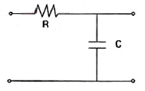
- 2[μs]
- 2.2[μs]
- 4[μs]
- 4.4[μs]
(정답률: 55%)
13. 숫자 0에서 9까지를 나타내기 위해 BCD 코드는 몇 비트가 필요한가?
- 4
- 3
- 2
- 1
(정답률: 83%)
14. 다음 중 2-out of-5 code에 해당하지 않는 것은?
- 10010
- 11000
- 10001
- 11001
(정답률: 82%)
15. BCD 코드 1001에 대한 해밍 코드를 구하면?
- 0011001
- 1000011
- 0100101
- 0110010
(정답률: 57%)
16. 다음 중 Master-Slave 플립플롭은 어떠한 현상을 해결하기 위한 플립플롭인가?
- 지연 현상
- Race 현상
- Set 현상
- Toggle 현상
(정답률: 79%)
17. 반가산기에서 입력이 A, B일 경우, 반가산기의 합(S)에 대한 출력 논리식으로 옳은 것은?
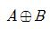
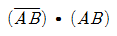
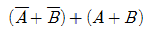
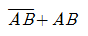
(정답률: 76%)
18. 다음 그림과 같은 회로의 명칭은?
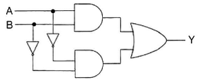
- 일치 회로
- 시프트 회로
- 카운터 회로
- 다수결 회로
(정답률: 70%)
19. 다음 중 특정 비트의 값을 무조건 0으로 바꾸는 연산은?
- XOR 연산
- 선택적-세트(Selective-Set) 연산
- 선택적-보수(Selective-Complement) 연산
- 마스크(Mask) 연산
(정답률: 80%)
20. 다음 중 디코더(Decoder)에 대한 설명으로 틀린 것은?
- 출력보다 많은 입력을 갖고 있다.
- 한번에 하나의 출력만을 동작한다.
- N 비트의 2진 코드 입력에 의해 최대 2N개의 출력이 나온다.
- 인코더(Encoder)의 역기능을 수행한다.
(정답률: 67%)
2과목: 정보통신 시스템
21. 교환국 수가 n일 때 메쉬형(그물형) 통신망의 중계 회선수는?
- n
- n(n-1)/2
- n/2
- n-1
(정답률: 93%)
22. 다음 중 지능망의 구성 요소가 아닌 것은?
- IP(Intelligent Peripheral)
- LBS(Location Base Service)
- SCP(Service Control Point)
- SSP(Service Switching Point)
(정답률: 61%)
23. 국내의 통신망 발전 단계로 올바른 것은?
- ISDN → PSTN → BCN
- BCN → ISDN → PSTN
- PSTN → ISDN → BCN
- ISDN → BCN → PSTN
(정답률: 72%)
24. 데이터 전송 방식에서 직렬 전송 방식이 아닌 것은?
- 현재 대부분의 데이터 전송 시스템에 활용되고 있다.
- 단말 장치에서의 입출력 부호 형식은 직렬구성을 취한다.
- 부호를 구성하는 모든 비트를 하나의 전송로를 통해 차례로 전송하는 방식이다.
- 송수신간에 동기가 필요하다.
(정답률: 55%)
25. 인터넷에서는 네트워크와 단말기들을 유일하게 식별하기 위해 고유한 주소체계인 인터넷 주소 IP를 사용한다. 다음 중 인터넷 주소 IP에 대한 설명으로 옳지 않은 것은?
- 인터넷 IP주소는 네트워크의 크기에 따라 5개의 클래스(A/B/C/D/E)로 구분되는데 그 중 클래스 A는 가장 많은 호스트를 가지고 있는 큰 네트워크를 위해 할당된다.
- 인터넷 IP 주소는 64[bits]로 이루어지며 16[bit]씩 4부분으로 나누어 사용한다.
- 인터넷 모든 IP 주소는 InterNIC에서 할당한다.
- 인터넷 IP 주소는 네트워크 주소와 호스트 주소로 구성한다.
(정답률: 78%)
26. 다음 중 X.25 표준에 대한 설명으로 틀린 것은?
- ITU-T가 개발한 패킷교환 방식의 장거리통신망 표준이다.
- X.25 계층 구조는 물리계층, 프레임계층, 상위계층으로 구성되어 있다.
- 패킷 방식 단말이 데이터 교환을 하기 위해 어떻게 패킷 네트워크에 연결되는가를 정의한다.
- 패킷의 다중화는 비동기식 TDM을 사용한다.
(정답률: 72%)
27. OSI 참조 모델의 구성요소 중 서비스와 데이터 단위에 대한 설명이다. 괄호 안에 알맞은 말은?
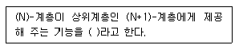
- (N)-서비스
- (N)-SAP
- (N)-SDU
- (N+1)-SAP
(정답률: 81%)
28. 다음 중 표준 제정을 위한 표준기구와 거리가 먼 것은?
- ANSI
- ITU-T
- IEEE
- OSI
(정답률: 81%)
29. OSI 참조모델 중 네트워크 계층의 기능을 설명한 것으로 옳은 것은?
- 인접하는 개방형 시스템간에서 데이터 송ㆍ수신을 수행한다.
- 상위계층과 연결을 설정하고 관리하며 시스템을 연결하는데 필요한 데이터 전송기능과 교환을 제공한다.
- 데이터링크계층으로부터 인도된 데이터를 물리회선에 싣기 위한 기능을 제공한다.
- 응용 프로세스간의 정보교환 기능을 실현한다.
(정답률: 66%)
30. 패킷교환망에서 PAD(Packet Assembly Disassembly) 기능과 그 동작을 제어하는 인자들에 관한 ITU-T 표준은?
- X.3
- X.25
- X.28
- X.29
(정답률: 47%)
31. 이동통신에서 반사나 회절 등으로 전파의 전송경로가 다르게 되어 수신신호의 레벨이 변동이 생기는데 이러한 현상을 무엇이라 하는가?
- 페이딩 현상
- 도플러 현상
- 채널간섭 현상
- 지연확산 현상
(정답률: 80%)
32. 다음 중 위성통신에서 다운링크(Down Link)에 대한 설명으로 옳은 것은?
- 위성으로부터 송신 지구국으로의 회선
- 위성으로부터 수신 지구국으로의 회선
- 송신 지구국으로부터 수신 지구국으로의 회선
- 수신 지구국으로부터 송신 지구국으로의 회선
(정답률: 84%)
33. 다음 중 유비쿼터스도시(U-City) 기초인프라에 해당하지 않는 것은?
- 관로 및 인공(Manhole)
- 방송공동수신설비
- IT Pole, 철탑
- CCTV
(정답률: 49%)
34. 다음 중 ITU-T No.7 신호방식에 대한 설명으로 틀린 것은?
- 공통선 신호방식이다.
- 디지털 교환망에 적합한 신호방식이다.
- 통화 중에는 제어정보의 송수신이 불가능하다.
- 교환기와 교환기 사이에 제어신호를 전달하는 방식이다.
(정답률: 83%)
35. 근거리 통신망에 접속된 PC를 통해 인터넷 접속을 하기 위해서 PC에 구성되어야 할 프로토콜 구조는 무엇인가?
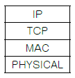
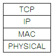
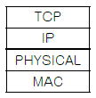
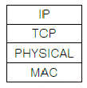
(정답률: 85%)
36. 다음 중 무선랜(Wireless Local Area Network)에서 사용하는 보안 기술이 아닌 것은?
- IEEE 802.11n
- IEEE 802.11i
- IEEE 802.1x
- IPSec
(정답률: 49%)
37. 다음 중 회선교환방식에 비하여 패킷교환방식의 장점이 아닌 것은?
- 회선효율이 높아 경제적 망구성이 가능하다.
- 장애발생 등 회선상태에 따라 경로설정이 유동적이다.
- 실시간 데이터 전송에 유리하다.
- 프로토콜이 다른 이기종망간 통신이 가능하다.
(정답률: 68%)
38. 인터넷 프로토콜 중 IPv4는 주소부족, 보안성 취약, 실시간 전송 시의 문제점 등이 있어 IPv4의 주소체계를 개선한 차세대 인터넷 프로토콜은?
- IPv5
- IPv6
- Subnetting
- NAT
(정답률: 90%)
39. 다음은 암호화에 사용되는 기술의 특징을 설명한 것이다. 무엇에 대한 설명인가?
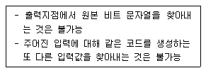
- 해쉬함수
- IPSec
- 공개키 암호화
- 대칭키 암호화
(정답률: 88%)
40. 다음 중 정보통신망 운영계획에 포함되어야 할 내용이 아닌 것은?
- 연간, 월간 장기계획
- 주간, 일간 단기계획
- 최적 회선망의 설계조건 검토
- 작업내용, 작업량, 우선순위, 주기, 운전소요시간, 운전형태 및 시스템구성
(정답률: 72%)
3과목: 정보통신 기기
41. DOCSIS(Data Over Cable Service Interface Specifications)라는 표준 인터페이스를 활용하는 단말은?
- 케이블 모뎀
- 휴대폰
- 스마트 패드
- 유선 일반전화기
(정답률: 86%)
42. 다음 중 포트 공동 이용기(Port Sharing Unit)의 특징이 아닌 것은?
- 여러 대의 터미널의 하나의 포트를 이용하므로 포트의 비용을 줄일 수 있다.
- 폴링과 셀렉션 방식에 의한 통신이다.
- 컴퓨터와 가까운 곳에 있는 터미널이나 원격지 터미널에 모두 이용할 수 있다.
- 터미널의 요청이 있을 때 사용하지 않는 포트를 찾아 할당한다.
(정답률: 53%)
43. 다음 중 리피터와 브리지에 대한 설명으로 맞지 않는 것은?
- 리피터는 하나의 LAN의 세그먼트를 연결한다.
- 리피터는 모든 프레임을 내보내며 필터링 능력을 갖고 있지 않다.
- 브리지는 필터링 결정에 사용되는 테이블을 가지고 있다.
- 브리지는 프레임의 물리적 주소(MAC address)를 변경한다.
(정답률: 71%)
44. 라우터를 로컬 내에서만 연결하여 관리할 수 있는 인터페이스(포트)는 무엇인가?
- 이더넷 포트
- 직렬 포트
- 콘솔 포트
- Auxiliary 포트
(정답률: 75%)
45. 단일 링크를 통하여 여러 개의 신호를 동시에 전송하는 것은 무엇인가?
- 변조
- 부호화
- 복호화
- 다중화
(정답률: 89%)
46. 1,200[bps] 속도를 갖는 4채널을 다중화한다면 다중화 설비 출력 속도는 적어도 얼마 이상이어야 하는가?
- 1,200[bps]
- 2,400[bps]
- 4,800[bps]
- 9,600[bps]
(정답률: 87%)
47. 다음 중 CATV 시스템에 대한 설명으로 옳지 않은 것은?
- 유선방송 시스템은 공동수신 CATV, 지역외 CATV, 자체방송 CATV, 쌍방향 CATV로 구분한다.
- 국소적인 분야에서 특수한 목적으로 사용하는 경우 간단한 카메라와 모니터링 화면 및 화상정보의 전송로 전달과 통제실 확인장치 및 컴퓨터 시스템으로 구성된다.
- CATV의 3요소는 전체 시스템을 통제하는 유선국, 신호를 분배 전송하는 분재 전송로, 서비스를 받는 가입자국으로 구성한다.
- 유선방송 시스템의 응용으로는 호텔용 CATV, 교통감시용 CATV, 교육용 CATV, 정지화상통신, TV 회의, TV 전화 등이 있다.
(정답률: 72%)
48. CATV 시스템의 기본 구성에서 안테나로부터의 수신된 방송신호의 출력 레벨을 조정하여 전송망으로 보내는 것은?
- 탭오프(Tap-off)
- 간선 증폭기
- 분기 증폭기
- 헤드엔드(Head-end)
(정답률: 84%)
49. 다음 중 화상회의 시스템 설명으로 적합하지 않은 것은?
- 동화상처리 방식에는 프레임 다중 방식 등이 있다.
- 음성처리 과정에서 하울링이나 에코현상이 일어날 수 있다.
- 음성, 영상압축 기술이 필요하며 광대역 고속 통신망이 유리하다.
- 정지화상 통신회의 시스템은 협대역 전송로를 사용하므로 가격이 비싸다.
(정답률: 86%)
50. 트래픽 단위에서 180[HCS]는 몇 얼랑(Erlang)인가?
- 3[Erl]
- 4[Erl]
- 5[Erl]
- 6[Erl]
(정답률: 80%)
51. 다음 중 영상통신에서 지원하는 H.264에 대한 설명으로 틀린 것은?
- 데이터는 직사각형 비디오 프레임을 지원한다.
- 움직임 보상의 최소 블록 크기는 4×4이다.
- 움직임 벡터(추정 및 보상)의 정확도는 1/4화소로 지원한다.
- 디코더 내부의 디블록킹 필터는 사용하지 않는다.
(정답률: 78%)
52. 셀룰러(Cellular) 방식의 이동통신에서 입력속도 9.6[kbps], 출력속도 1.2288[Mbps]일 때 확산이득은 약 얼마인가?
- 15.03[dB]
- 19.40[dB]
- 21.07[dB]
- 24.50[dB]
(정답률: 77%)
53. 위성통신에서 지구국 장비의 기본 구성에 해당하지 않는 것은?
- 안테나계
- 송신계
- 수신계
- 추진계
(정답률: 86%)
54. 인공위성이나 우주 비행체는 매우 빠른 속도로 운동하고 있으므로 전파발진원의 이동에 따라서 수신주파수가 변하는 현상은?
- 페이져 현상
- 플라즈마 현상
- 도플러 현상
- 전파지연 현상
(정답률: 81%)
55. FM 수신기 리미터의 역할로 가장 타당한 것은?
- 진폭 제한기
- 전류 증폭기
- 잡음 억제 회로
- 주파수 체배기
(정답률: 66%)
56. 다음 중 가입자망 기술로 망의 접속계 구조 형태인 PON 기술에 대한 특징으로 틀린 것은?
- 네트워크 양끝 단말을 제외하고는 능동소자를 전혀 사용하지 않는다.
- 광섬유의 효율적인 사용을 통하여 광전송로의 비용을 절감한다.
- 유지보수 비용이 타 방식에 비해 저렴하다.
- 보안성이 우수하다.
(정답률: 59%)
57. 다음 중 디지털 TV 방송기술에 대한 설명으로 틀린 것은?
- 영상 및 음향 신호의 압축이 용이하고 녹화 재생시 화질이나 음질의 열화가 없다.
- 멀티미디어 서비스가 가능하다.
- 상호간섭이 적고 신호의 열화가 완만하다.
- 오류 정정기술 등을 사용할 수 있고 저장, 복제, 저장에 따른 손실이 적다.
(정답률: 69%)
58. 어느 멀티미디어 기기의 전송대역폭이 6[MHz]이고 전송속도가 19.39[Mbps]일 때, 이 기기의 대역폭 효율값은 약 얼마인가?
- 2.23
- 3.23
- 5.25
- 6.42
(정답률: 89%)
59. 다음 중 메시지 처리시스템(MHS)의 구성 요소가 아닌 것은?
- MS(Message Store)
- UA(User Agent)
- MTA(Message Transfer Agent)
- MH(Message Host)
(정답률: 72%)
60. 다음은 무엇에 관한 설명인가?
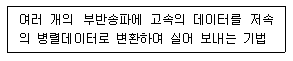
- AMC(Adaptive Modulation and Coding)
- HARQ(Hybrid ARQ)
- DCT(Discrete Cosine Transform)
- OFDM(Orthogonal Frequency Division Multiplexing)
(정답률: 83%)
4과목: 정보전송 공학
61. 표본화 정리에 의하면 주파수 대역이 60[Hz]~3.6[kHz]인 신호를 완전히 복원하기 위한 표본화 주기는?
- 1/60[초]
- 1/3.6[초]
- 1/7,200[초]
- 1/6,800[초]
(정답률: 80%)
62. 5단 귀환 시프트 레지스터(shift register)로 구성된 PN부호 발생기의 출력 데이터 계열의 주기는?
- 5
- 16
- 31
- 32
(정답률: 68%)
63. PCM 단계 중에서 연속적인 아날로그 신호를 입력으로 받아 불연속적인 진폭을 갖는 펄스를 생성하는 과정에 해당되는 것은?
- 표본화
- 양자화
- 부호화
- 압축기
(정답률: 68%)
64. 다음 중 엘리에싱(Aliasin) 현상이 발생하는 원인으로 알맞은 것은?
- 나이퀴스트 주파수보다 높게 하여 표본화할 경우 발생한다.
- 나이퀴스트 주파수보다 낮게 하여 표본화할 경우 발생한다.
- 나이퀴스트 주파수로 표본화했을 경우 발생한다.
- 나이퀴스트 주기보다 짧게 하여 표본화할 경우에 발생한다.
(정답률: 79%)
65. 8진PSK 신호에 5,000[Hz]의 대역폭이 주어졌을 때 보오율(baud rate)과 비트율(bit rate)은 각각 얼마인가?
- 보오율: 5,000[baud/s], 비트율: 15,000[bps]
- 보오율: 5,000[baud/s], 비트율: 20,000[bps]
- 보오율: 10,000[baud/s], 비트율: 15,000[bps]
- 보오율: 10,000[baud/s], 비트율: 20,000[bps]
(정답률: 79%)
66. 다음 중 단일 모드(Single mode) 광섬유에 대한 설명으로 알맞은 것은?
- 광섬유 속을 지나는 전파모드가 여러 개이다.
- 광선의 도착시간 차이에 의해 전송대역폭이 제한된다.
- 광선이 도착하는 시간차가 없으므로 10[GHz]의 넓은 전송대역폭을 가진다.
- 코어 직경이 크므로 제조 및 접속이 용이하고 초대용량 단거리 전송에 적합하다.
(정답률: 59%)
67. 다음 중 전송로의 동적 불완전성 원인으로 발생하는 에러로 알맞은 것은?
- 지연 왜곡
- 에코
- 손실
- 주파수 편이
(정답률: 61%)
68. 가장 널리 사용되는 100[Mbps] 디지털 전송용 UTP 케이블의 접속에 사용되는 8핀 커넥터 표준 규격은?
- RS-22
- RS-42
- RJ-22
- RJ-45
(정답률: 84%)
69. 다음 중 광통신시스템에서 전송 속도를 제한하는 주된 요인으로 알맞은 것은?
- 광분산
- 광손실
- 전반산
- 굴절
(정답률: 66%)
70. 다음 중 혼합식 동기 전송의 특징이 아닌 것은?
- 시작 비트와 정지 비트가 존재한다.
- 송신기와 수신기는 동기 상태를 유지하고 있어야 한다.
- 비동기식 전송보다 빠르고 동기식 전송보다 느리다.
- 전송 성능이 좋아지고 전송 대역폭이 좁아지는 장점이 있다.
(정답률: 68%)
71. ‘TEST'라는 문자를 아스키(ASCII) 코드 형태로 변환하여 비동기 방식으로 전송할 때 스타트 비트, 스톱 비트를 각각 1비트로 할 경우 전송되는 총 비트수는?
- 6[bit]
- 28[bit]
- 32[bit]
- 40[bit]
(정답률: 80%)
72. 다음 중 NO.7 신호방식의 기능별 블록에서 사용자부(UP)에 해당하지 않는 것은?
- MTP(Message Transfer Part)
- TCAP(Transaction Capabilities Application Part)
- SCCP(Signaling Connection Control Part)
- TUP(Telephone User Part)
(정답률: 56%)
73. 다음 중 동선(구리선)을 사용하는 전송로 구간에서 사용하는 통화로 신호방식은?
- 직류 방식
- 교류 방식
- In-Band 방식
- Out-of-Band 방식
(정답률: 64%)
74. 다음 IP 주소들이 어느 클래스에 속하는지 맞게 연결한 것은?
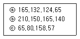
- ⓐ C 클래스, ⓑ E 클래스, ⓒ D 클래스
- ⓐ A 클래스, ⓑ B 클래스, ⓒ C 클래스
- ⓐ B 클래스, ⓑ C 클래스, ⓒ A 클래스
- ⓐ A 클래스, ⓑ B 클래스, ⓒ D 클래스
(정답률: 88%)
75. 다음 중 IP의 특성이 아닌 것은?
- 비접속형
- 신뢰성
- 주소 지정
- 경로 설정
(정답률: 77%)
76. 다음 중 브로드캐스트 주소(Broadcast Address)에 대한 설명으로 알맞은 것은?
- 데이터를 보낼 때 특정 노드에게만 데이터를 보낸다.
- 네트워크 주소에서 호스트의 비트가 모두 1인 주소이다.
- 네트워크 검사용으로 예약된 주소이다.
- 호스트 식별자에 127를 붙여서 사용한다.
(정답률: 77%)
77. 물리계층의 4대 특성 중 DTE와 DCE간의 신호의 전압레벨, 상승시간, 하강시간, 잡음이득을 규정한 것은?
- 기계적 특성
- 전기적 특성
- 기능적 특성
- 절차적 특성
(정답률: 84%)
78. 다음 ITU-T 권고안 시리즈 중 축적 프로그램 제어식 교환의 프로그램 언어에 관한 사항을 규정한 것은?
- I
- Q
- P
- Z
(정답률: 52%)
79. 다음 문장의 괄호안에 들어갈 내용으로 알맞은 것은?
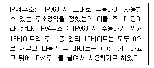
- 00FF
- AAFF
- CCFF
- FFFF
(정답률: 74%)
80. 다음 중 가상회선 패킷교환방식에 대한 설명으로 틀린 것은?
- 모든 패킷은 설정된 경로에 따라 전송된다.
- 연결형 서비스를 제공한다.
- 경로가 미리 결정되기 때문에 각 노드에서의 데이터 패킷의 처리속도가 그만큼 빠르게 된다.
- 수신지의 마지막 노드에서는 송신지에서 송신한 순서와 다르게 패킷이 도착할 수 있다.
(정답률: 66%)
5과목: 전자계산기일반 및 정보통신설비기준
81. CPU가 어떤 프로그램을 순차적으로 수행하는 도중에 외부로부터 인터럽트 요구가 들어오면, 원래의 프로그램을 중단하고, 인터럽트를 위한 프로그램을 먼저 수행하게 되는데 이와 같은 프로그램을 무엇이라 하는가?
- 명령 실행 사이클
- 인터럽트 서비스 루틴
- 인터럽트 사이클
- 인터럽트 플래그
(정답률: 77%)
82. 다음 중 후입선출(LIFO) 처리제어 방식은?
- 스택
- 선형 리스트
- 큐
- 원형 연결 리스트
(정답률: 75%)
83. 상대 주소지정(Relative Addressing)에서 사용하는 레지스터는 무엇인가? (문제 오류로 실제 시험에서는 모두 정답처리 되었습니다. 여기서는 1번을 누르면 정답 처리 됩니다.)
- 일반 레지스터(General Register)
- 색인 레지스터(Index Register)
- 시프트 레지스터(Shift Register)
- 메모리 주소 레지스터(Memory Address Register)
(정답률: 76%)
84. 다음 중 콘솔(Console)에 대한 설명으로 옳은 것은?
- 컴퓨터의 상태를 감시하고, 운용자의 필요에 의해서 동작에 개입할 수 있도록 설치된 단말기이다.
- 주기억 장치의 용량 부족을 보충하기 위해 외부에 부착하는 저장용 단말기이다.
- 타자기와 비슷한 형태의 입력 장치로서, 문자나 숫자의 키(Key)를 눌러서 컴퓨터에 입력시키는 단말기이다.
- 컴퓨터에서 처리된 결과를 인쇄하는 데 사용되는 단말기이다.
(정답률: 73%)
85. 시프트 레지스터(Shift Register)의 내용을 오른쪽으로 2비트 이동시키면 원래 저장되었던 값은 어떻게 변화되는가?
- 원래 값의 2배
- 원래 값의 4배
- 원래 값의 1/2배
- 원래 값의 1/4배
(정답률: 71%)
86. 객체지향 언어의 세 가지 언어적 주요 특징이 아닌 것은?
- 추상 데이터 타입
- 상속
- 동적 바인딩
- 로더(Loader)
(정답률: 77%)
87. 다음 중 다중프로그래밍(Multi-Programming)을 위하여 시스템이 갖추어야 할 것으로 관계가 가장 적은 것은?
- 인터럽트(Interrupt)
- 가상메모리(Virtual Memory)
- 시분할(Time Slicing)
- 스풀링(Spooling)
(정답률: 50%)
88. 다음 중 ROM(Read-Only Memory)에 저장하기 가장 적합한 것은?
- 사용자 프로그램
- BIOS(Basic Input Output System)
- 인터럽트 벡터
- 사용자 데이터
(정답률: 73%)
89. 다음 중 운영체제의 프로세스 관리기능에 속하지 않는 것은?
- 사용자 및 시스템 프로세스의 생성과 제거
- 프로그램내 명령어 형식의 변경
- 프로세스 동기화를 위한 기법의 제공
- 교착상태 방지를 위한 기법 제공
(정답률: 67%)
90. 프로그램 구현시 목적파일(Object File)을 실행파일(Execute File)로 변환해 주는 프로그램은?
- 링커(Linker)
- 프리프로세서(Preprocessor)
- 인터프리터(Interpreter)
- 컴파일러(Comipler)
(정답률: 55%)
91. 다음 중 정보통신 감리에 대한 설명으로 옳지 않은 것은?
- 발주자는 영역업자에게 공사의 감리를 발주하여야 한다.
- 감리는 품질관리, 시공관리 및 안전관리 지도 등에 관한 발주자의 권한을 대행한다.
- 감리원은 고용노동부장관의 인정을 받은 사람을 말한다.
- 감리원은 설계도서 및 관련 규정의 내용대로 시공되는지를 감독한다.
(정답률: 81%)
92. 방송통신재난에 대비하기 위하여 수립하여야 하는 방송통신재난관리 기본계획에 포함되어야 하는 사항이 아닌 것은?
- 우회 방송통신 경로의 확보
- 방송통신회선설비의 연계 운용을 위한 정보체계의 구성
- 피해복구 물자의 확보
- 통신재난을 입은 전기통신설비의 매수
(정답률: 74%)
93. 다음 중 정보통신공사업의 변경신고사항이 아닌 것은?
- 대표자
- 자본금의 변동
- 영업소의 소재지
- 정보통신기술자의 경력사항
(정답률: 74%)
94. 다음 중 국가정보화 추진의 기본원칙에 해당되지 않는 것은?
- 민간과의 협력 체계를 마련하는 등 사회 각 계층의 다양한 의견 수렴
- 정보화의 역기능을 방지하기 위한 정보보호, 개인정보 보호 등의 대책 마련
- 국민이 국가정보화의 성과를 보편적으로 누릴 수 있도록 필요한 조치
- 정보통신기반의 보호를 위한 제한적 접근과 활용 통제
(정답률: 77%)
95. 다음 중 적합성평가를 받은 기자재가 적합성평가 기준대로 제조ㆍ수입 또는 판매되고 있는지 조사 또는 시험하는 것을 무엇이라고 하는가?
- 품질관리
- 규격관리
- 사후관리
- 시험관리
(정답률: 73%)
96. 감리원의 배치기준 중에서 특급감리원의 배치기준은?
- 총 공사금액 100억원 이상인 공사
- 총 공사금액 70억원 이상 100억원 미만인 공사
- 총 공사금액 30억원 이상 70억원 미만인 공사
- 총 공사금액 5억원 이상 30억원 미만인 공사
(정답률: 65%)
97. 다음 중 정보통신공사에 대한 감리결과에 포함되지 않는 것은?
- 착공일 및 완공일
- 사용자재의 적합성 평가결과
- 시공상태의 평가결과
- 감리비용 사용명세서
(정답률: 70%)
98. 유선, 무선, 광선 또는 그 밖의 전자적 방식으로 부호, 문언, 음향 또는 영상을 송신하거나 수신하는 것을 무엇이라 하는가?
- 정보통신
- 전기통신
- 전자통신
- 무선통신
(정답률: 65%)
99. 다음 중 기간통신설비에 대한 안전성 및 신뢰성 기준의 의무사항이 아닌 것은?
- 전송로설비의 동작 감시
- 회선의 분산 수용
- 시험기기의 확보
- 이상폭주 등의 감시 및 통지
(정답률: 47%)
100. 다음 중 정보통신공사업법에서 규정하는 ‘하도급’에 대한 설명으로 옳은 것은?
- 도급받은 공사의 전부에 대하여 수급인이 제3자와 체결하는 계약을 말한다.
- 도급받은 공사의 일부에 대하여 하도급인이 제3자와 체결하는 계약을 말한다.
- 도급받은 공사의 일부에 대하여 수급인이 제3자와 체결하는 계약을 말한다.
- 도급받은 공사의 전부에 대하여 하급인이 제3자와 체결하는 계약을 말한다.
(정답률: 77%)
다이오드는 전류가 한 방향으로만 흐를 수 있도록 제한하는 역할을 한다. 따라서 다이오드를 병렬로 연결하면 전류가 더 많이 흐를 수 있게 되어 정류회로의 전류용량이 커진다.
그러나 다이오드를 병렬로 연결할 경우, 각 다이오드의 특성이 서로 다를 수 있기 때문에 전류가 골고루 분배되지 않을 수 있다는 단점이 있다. 따라서 정확한 설계와 검증이 필요하다.